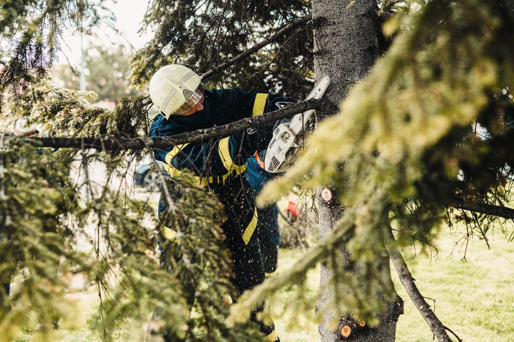
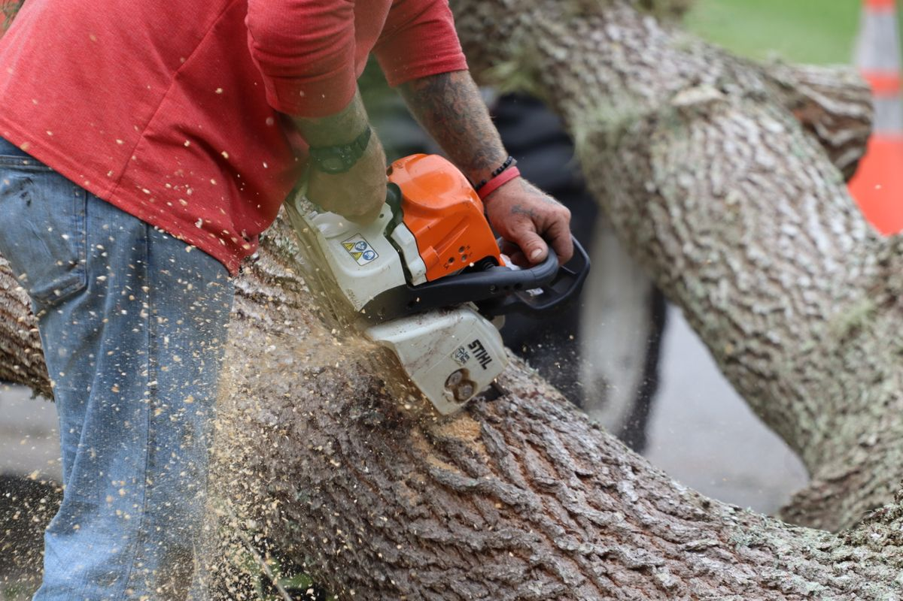
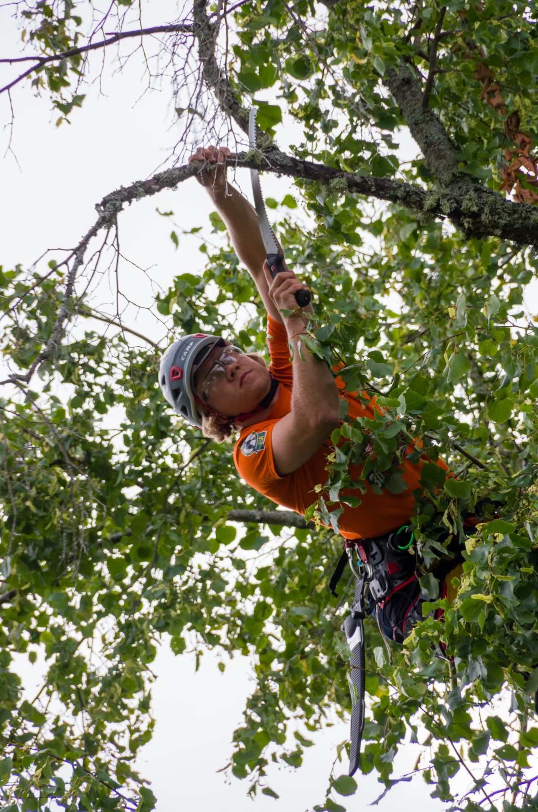

Tree Care, Lubbock TX
C+K Tree Care
Tree and bush trimming and removal, stump grinding, and deep root fertilization in Lubbock, from an ISA Certified Arborist.
Tree and bush trimming and removal, stump grinding, deep root fertilization.
Tree care services
Tree trimming
Tree trimming by an ISA Certified Arborist.
Bush trimming
Bush trimming.
Tree and bush removal
Tree and bush removal.
Stump grinding
Stump grinding.
Deep root fertilization
Deep root fertilization.
Pest treatments
Pest treatments for trees.
Landscaping services
Landscaping services.
About
C+K Tree Care is a tree care company in Lubbock, Texas, family and veteran owned. Owner and operator Cody Weber is an ISA Certified Arborist. The company was formerly Weber's Tree Service. Services cover tree and bush trimming and removal, stump grinding, deep root fertilization, pest treatments, and landscaping services. Hours are Monday to Saturday 7:00 AM to 8:00 PM; Sunday closed. Call (806) 392-3183 to ask about a job.
Gallery


All gallery photos are stock photos, labeled as such. They show tree work and arborists, not this company's crews.
Family and veteran owned
C+K Tree Care is family and veteran owned, and was formerly Weber's Tree Service. Call (806) 392-3183 to ask about a job.
Visit
Contact
C+K Tree Care serves Lubbock, TX. Questions? Call (806) 392-3183.